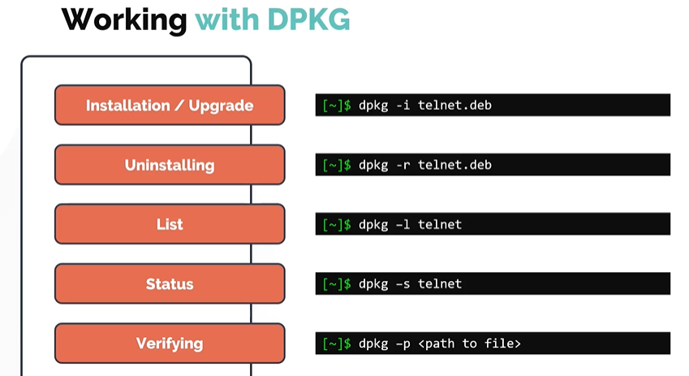

DPKG and APT Package Managers
In this section, we will look at debian package managers for distributions like Ubuntu, Debian and PureOS.
- DPKG
- APT
DPKG Utility
- DPKG stands for Debian Package Manager
- It is a low level package manager

Working with DPKG
Similar to RPM, DPKG can be used for the below. The package extension is .deb. 1. Installing 1. Uninstalling 1. Upgrade 1. List 1. Status 1. Verfiying

APT and APT-GET
Similar to RPM, DPKG doesnt resolve the dependencies when it comes to package management.
- Install may fail due to dependencies issues. This is the reason why we use higher level debian package managers such as APT and APT-GET.
- Instead of relying on DPKG, you can install software along with its dependencies using
APTorAPT-GET. APTorAPT-GETalthough sounds similar, but they do not depend on each other.-
APTstands for advanced package managers, it is more user friendly and overall better tool compared toAPT-GET.$sudo apt install gimp $sudo apt-get install gimp -
APT act as a frontend package manager that relies on DPKG utility. In similar to YUM, APT relies on software repository that contains packages that would eventually be installed on a system.
- The software repository for APT is defined in
/etc/apt/sources.listfile.

Let us know see some common commands
To refresh a repository. Run apt update command.
$ sudo apt update
To install available upgrades of all packages currently installed on the system from the sources configured.
$ sudo apt upgrade
Another way to update the repository is to use apt edit-sources command. This opens up the /etc/apt/sources.list file in the text editor of your choice.
$ sudo apt edit-sources
To install the package
$ sudo apt install telnet
To remove the package
$ sudo apt remove telnet
To search or look for a package in the repository.
$ sudo apt search telnet
To list all the available packages
$ sudo apt list |grep telnet